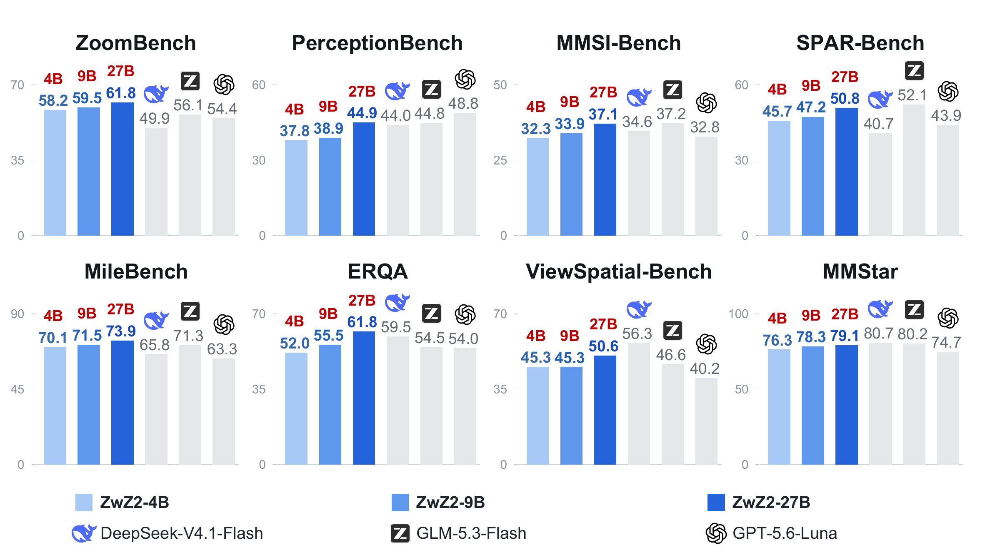
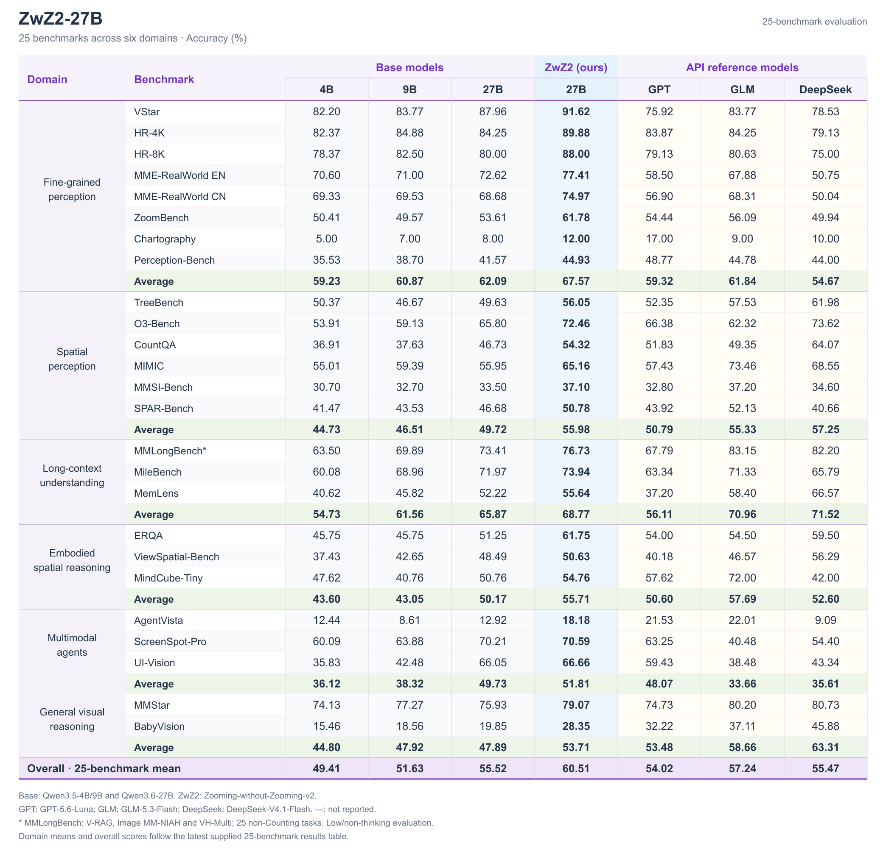

ZwZ2-27B
📃 Paper | 🏠 Project | 🤗 Collection
✨ Model Summary
ZwZ2-27B is the Qwen3.6-27B-based model in Zooming-without-Zooming-v2 (ZwZ2). It learns to connect visual evidence across regions through comparison, aggregation, matching, and multi-step reasoning. Training uses full images; inference requires no zooming tools.
On 25 benchmarks across six domains, it improves over its base model on every benchmark, increasing overall accuracy from 55.52 to 60.51 (+4.99 points). Gains extend from fine-grained perception to spatial reasoning, long-context understanding, multimodal agents, and general visual reasoning.
⚙️ Method and Data
EvidenceConnect builds verified multi-region questions from SA-1B images:
- Group 3–7 related regions and generate questions using privileged zoomed views.
- Check answers through cross-model agreement and drop-one region tests.
- Convert verified questions to four-option tasks and train with GRPO, without an additional supervised fine-tuning stage.
All three model sizes use approximately 20K training examples. The policy sees full images with colored region outlines; privileged crop layouts are used only for data construction. See ZwZ2-RL-VQA for the data schema and synthesis process.
📊 Performance

Editable vector PDF. The figure shows eight representative benchmarks; the complete results follow.

Full-resolution results. Scores are accuracies (%); domain and overall averages weight the corresponding benchmarks equally. MMLongBench\* uses the visual core: V-RAG, Image MM-NIAH, and VH-Multi, comprising 25 non-Counting tasks. Advanced-model image resolution is constrained by their serving platforms.

🚀 Quickstart
Installation
Install a PyTorch build compatible with your hardware, then:
bashpip install "transformers==5.13.1" accelerate pillow huggingface_hub
Inference
pythonfrom pathlib import Path import torch from huggingface_hub import hf_hub_download from transformers import AutoProcessor, Qwen3_5ForConditionalGeneration model_id = "inclusionAI/ZwZ2-27B" model = Qwen3_5ForConditionalGeneration.from_pretrained( model_id, dtype=torch.bfloat16, device_map="auto" ).eval() processor = AutoProcessor.from_pretrained(model_id) processor.chat_template = Path( hf_hub_download(model_id, "chat_template.jinja") ).read_text(encoding="utf-8") messages = [{"role": "user", "content": [ {"type": "image", "url": "/path/to/image.jpg"}, {"type": "text", "text": "Describe this image."}, ]}] inputs = processor.apply_chat_template( messages, tokenize=True, add_generation_prompt=True, return_dict=True, return_tensors="pt", enable_thinking=False, ).to(model.device) with torch.inference_mode(): generated_ids = model.generate( **inputs, max_new_tokens=2048, do_sample=False ) output_text = processor.batch_decode( generated_ids[:, inputs["input_ids"].shape[1]:], skip_special_tokens=True, clean_up_tokenization_spaces=False, )[0] print(output_text)
Replace /path/to/image.jpg with an existing image. All three sizes use Qwen3_5ForConditionalGeneration, including the Qwen3.6-27B-based model. The example preserves the released chat template and uses non-thinking mode. The template requests final answers inside ...; a custom system message replaces that default instruction.
🤗 Models and Data
🤗 ZwZ2-RL-VQA training dataset
📄 Citation
bibtex@article{wei2026zoomingv2, title={Zooming without Zooming v2: From Seeing Details to Connecting Evidence for Generalizable Multimodal Perception}, author={Wei, Lai and Li, Yatai and He, Liangbo and Lan, Jun and Gu, Renjie and Cao, Linhan and Lin, Junkai and Zhu, Huijia and Wang, Weiqiang and Kong, Linghe and Wang, Yue and Zhang, Zhuosheng and Huang, Weiran}, journal={arXiv preprint arXiv:2610.37037}, year={2026} }
📄 Limitations and License
The model can hallucinate details, misread text, and make counting or spatial errors. Performance depends on image resolution, context length, and prompt format. Refer to the license accompanying the released weights and the applicable backbone license for usage terms.